How do the candidate forecasts for the 3 metered wind farms and the 6 metered solar farms score on the 5 development months, and which should be the default for each technology?
Wind default 2 scores clearly better than climatology and a little better than wind default 1,
and solar a2_member scores better than every solar reference, though not decisively against the
GAM. Its upper band on very sunny days is too low. This experiment scored every candidate forecast
for the 3 metered wind farms and the 6 metered solar farms on the 5 development months (forecast
origins in 2025-10, 2025-12, 2026-01, 2026-03, and 2026-06), with the scoring rules that
experiment 609
fixed for the final test. The final test (origins from 2026-07-01) was not run, and
no valid time in July 2026 or later is scored. Nothing here is adopted for production. Forecasts are
stored in the private folder backtest_export_wind_solar_dev_2026-11-07/, and the generators appear
only as W1 to W3 and Solar A to Solar F.
Terms. The quantile score is the mean pinball loss over the 11 quantile levels (q01 to q99), in points of capacity (smaller is better). Lead bands are 0 to 24, 24 to 120, and 120 to 240 hours. Coverage is the share of observations inside the q05 to q95 band (target 0.90). "Above q99" is the share of observations above the q99 forecast (target 0.01). "Exact zeros dropped" removes rows whose observed power is exactly zero, which experiment 609 calls version A-dev. Intervals resample whole forecast-origin months (5 months), so they are wide. Every contrast is "other candidate minus the default", so a positive number means the default scored better.
What was scored
- Wind default 2 is the physics plant of experiment 347, run on each of the 51 ensemble members, followed by a mixture-density neural network head. This experiment rebuilt the member inputs for every daily run from 2025-06-17 to 2026-06-30 and refitted the head at day 0 and day 15 of each development month (10 refits, seeds 0 and 1 averaged), with capacity at the 99.9th percentile of earlier power (the rule of experiment 461, recomputed at each refit).
- Wind references.
climatologyis a per-farm, month, and hour table of power before 2025-10-01. Wind default 1 and the stored wind default 2 exist only for Tuesday origins, so they are scored on those rows only. - Solar candidates are stored forecasts:
a2_memberrefitted every quarter, from experiment 430, and the yearly refit from experiment 493 (6 seeds each), and the GAM, XGBoost,climatology, andmanual_heuristicreferences of experiment 310 (seed 0).
Results
Wind default 2 scores 4.28 points over 0 to 240 h and beats every wind reference. The table
shows the pooled mean over the 3 farms with exact zeros dropped. Against climatology the gap is
1.04 points (99.4% interval 0.56 to 1.53, minimum detectable effect 0.68, 9 contrasts). Against wind
default 1, on the 40,847 Tuesday rows that both forecasts cover, the gap is 0.13 points (0.04 to
0.24, minimum detectable effect 0.15), and the interval excludes zero only at 120 to 240 h (0.15,
interval 0.08 to 0.25). The stored single-fit wind default 2 scores 0.03 points worse than the
refitted one (0.020 to 0.035) on the same rows.
| Candidate | Rows | Score (points) | q05-q95 coverage | Above q99 |
|---|---|---|---|---|
| Wind default 2 | 275,863 | 4.28 | 0.898 | 0.0130 |
climatology |
275,863 | 5.34 | 0.935 | 0.0164 |
| Wind default 2, stored single fit, Tuesday rows | 40,901 | 4.30 | 0.899 | 0.0207 |
| Wind default 1, Tuesday rows | 40,901 | 4.39 | 0.932 | 0.0137 |
The row counts are each candidate's own count. The gap to wind default 1 is paired on the 40,847 shared rows, so it does not equal the difference of the two table scores.
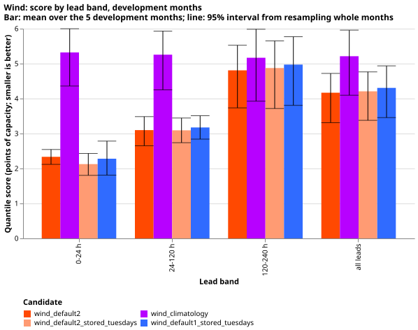
Look at the wind default 2 bars (orange) sitting below the climatology bars (purple) in every lead
band. The lines are 95% intervals from resampling the 5 months. Wind default 2 gains most at short
leads (2.35 against 5.33 points at 0 to 24 h) and least at 120 to 240 h (4.99 against 5.36).
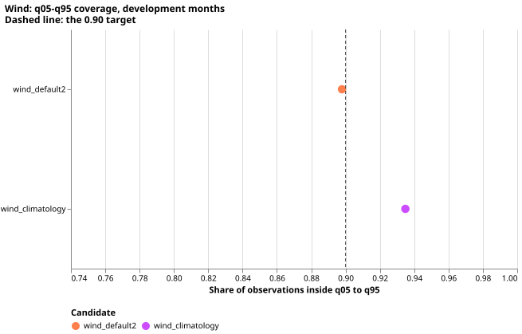
Look at wind default 2's coverage of 0.898, close to the dashed 0.90 target, and climatology's
wider band at 0.935.
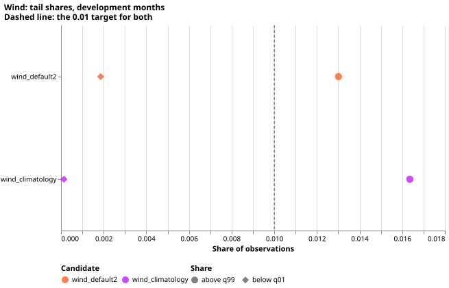
Look at wind default 2's share above q99 (circle) of 0.013, above the dashed 0.01 target, and its share below q01 (diamond) of 0.002, below the target.
Wind default 2's band is too narrow in January and March and on high-wind days. Coverage is 0.861 in 2026-01 and 0.869 in 2026-03, and 0.807 on the 50 high-wind days (days on which at least 2 of the 3 farms exceed 80% of capacity), where 4.1% of observations are above q99.
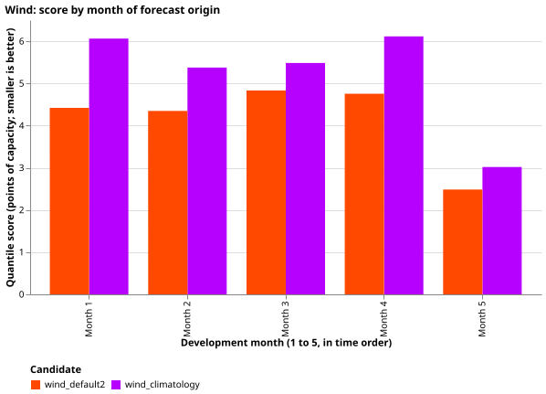
Months 1 to 5 are 2025-10, 2025-12, 2026-01, 2026-03, and 2026-06. Look at month 5 (a calm month, 2.5 points) against the other four months (4.3 to 4.8 points).
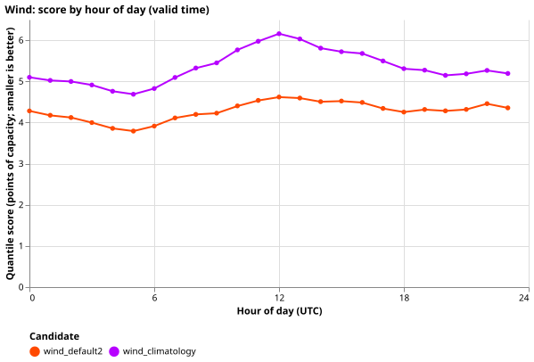
Look at the orange wind default 2 line staying below the purple climatology line at every hour
of the day.
Solar a2_member scores 3.30 points and beats the GAM and XGBoost references, but not by a
decisive margin. Quarterly and yearly refits score the same: the gap is 0.005 points (interval
-0.018 to 0.028, minimum detectable effect 0.033, 15 contrasts). The GAM is 0.073 points worse over
all leads (-0.017 to 0.157), which includes zero, and its gap excludes zero only at 0 to 24 h
(0.137, 0.003 to 0.315) and 24 to 120 h (0.081, 0.017 to 0.134). XGBoost is 0.255 points worse
(0.019 to 0.557). climatology and manual_heuristic are 0.87 and 0.83 points worse, with
intervals that exclude zero in every lead band. Solar rows are daylight half-hours at 12 to 251.5 h,
so the 0 to 24 h band holds only the 12 to 24 h part.
| Candidate | Score (points) | q05-q95 coverage | Above q99 |
|---|---|---|---|
a2_member, quarterly refit |
3.30 | 0.915 | 0.0168 |
a2_member, yearly refit |
3.30 | 0.908 | 0.0177 |
| GAM | 3.36 | 0.905 | 0.0140 |
| XGBoost | 3.57 | 0.853 | 0.0058 |
climatology |
4.20 | 0.955 | 0.0015 |
manual_heuristic |
4.17 | 0.821 | 0.0543 |
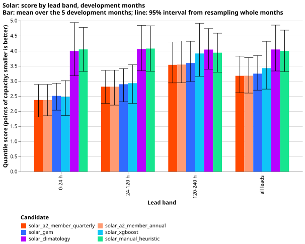
Look at the two a2_member bars (orange and light orange) being equal in every lead band, and
the purple and green reference bars being far above them.
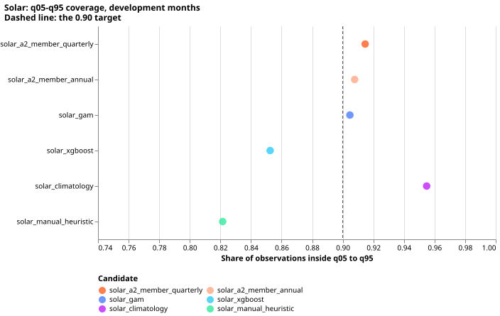
Look at manual_heuristic missing the dashed 0.90 target (0.82) and XGBoost at 0.85.
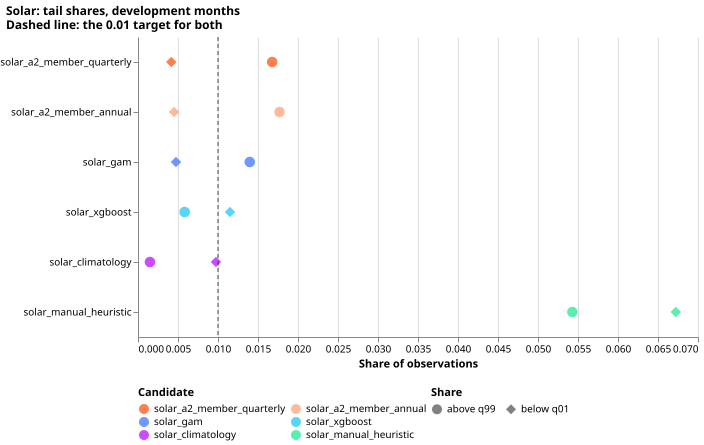
Look at the a2_member and GAM circles (share above q99) sitting above the dashed 0.01 target.
Solar a2_member's upper band is far too low on very sunny days. On the 12 days that reach 90%
of the farm's own monthly 95th percentile on at least half their daylight half-hours (2,345 rows),
17% of observations are above q99 and coverage is 0.62. The rule for these days is a proxy built from
the observed power, because no clear-sky series is stored with the forecasts. The count is small, so
the figure is a warning, not an estimate.
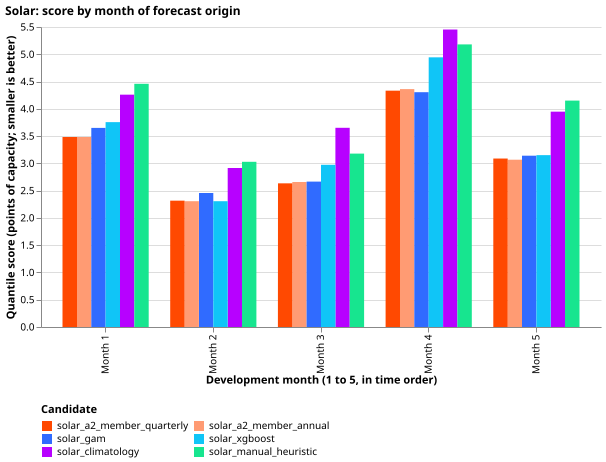
Months 1 to 5 are as above. The a2_member scores are lowest in months 2 and 3 (winter, 2.3 to 2.7
points) and highest in month 4 (4.3 points).
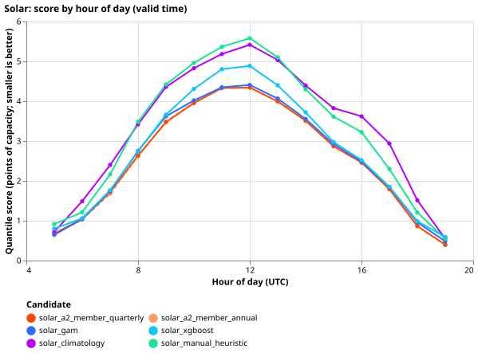
Daylight hours only. Every candidate scores worst around 11 to 12 UTC. The quarterly
refit of a2_member has the lowest score at every hour from 9 to 18 UTC. The GAM is lower at 5 UTC,
and the yearly refit is lower at 6 to 8 and 19 UTC.
Forecast examples
Each figure shows 14 days of day-ahead forecasts (wind: lead 24 to 48 h; solar: lead 12 to 36 h) in
percent of capacity, with the axis in day numbers. The blue strip under each panel marks half-hours
with no reading, or, for wind, dropped by the idle mask. The strip counts are listed in
strip_checks.txt, beside the figures.
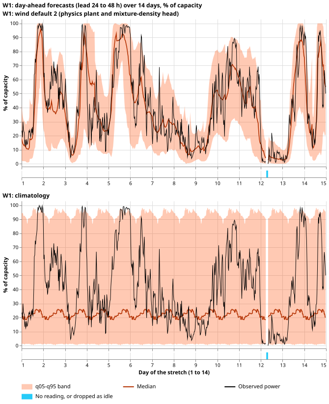
W1 over 14 days in December 2025. Look at the orange median following the black observation in the
top panel (wind default 2), while the bottom panel's climatology band stays wide and flat.
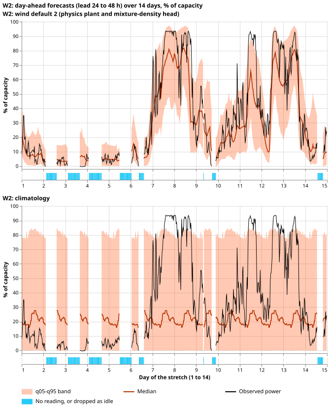
W2 over 14 days in March 2026, the stretch with the most missing half-hours (135 of 672).
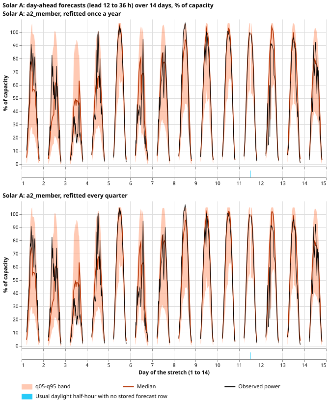
Solar A over 14 days in June 2026. Look at the observed power touching the top of the band at midday; the yearly refit is on top and the quarterly refit below. Lines break at night.
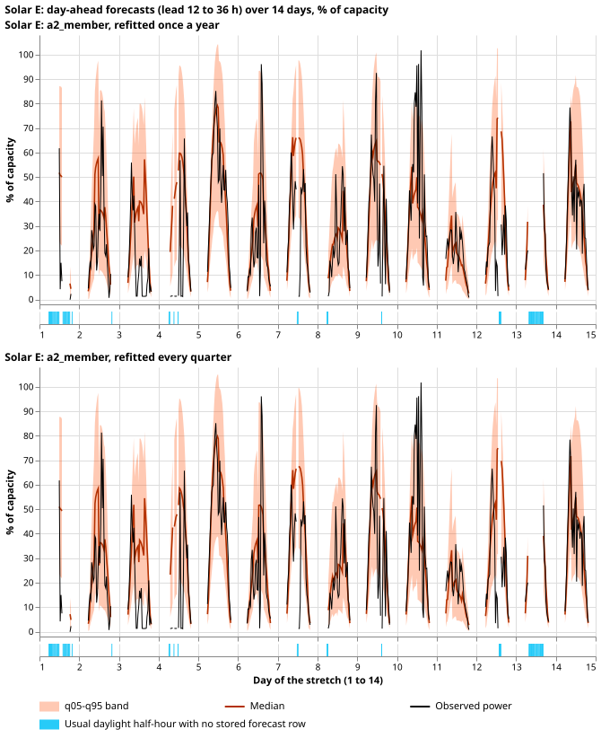
Solar E over 14 days in June 2026, with 54 of 406 usual half-hours missing. The other 23 stretches are
in the folder beside this page (wind_* and solar_* SVG files). In the Solar A stretch of March
2026, the observed power reads exactly zero for about 3 days while the forecast stays high. The
cause is not known.
Recommendation
Keep wind default 2 as the wind default, and a2_member as the solar default. For wind, the
refitted physics-plus-head forecast beats climatology clearly and wind default 1 modestly, and
refitting twice a month improves on the single fit. The upper tail and the January and March
coverage are the weak points to watch. For solar, the quarterly refit of a2_member has the lowest
score in 3 of the 5 months (the GAM is lower in 2026-03 and XGBoost in 2025-12) and beats every
reference over all leads, but the a2_member interval against the GAM includes zero. No difference
between yearly and quarterly refits was detectable above 0.033 points. The maintainer decides;
neither is adopted here.
What this experiment did not do
- No final test was run, and July 2026 is unused.
- Solar was not refitted. The stored solar forecasts come from refits at day 0 of each quarter (2025-09, 2025-12, 2026-03, 2026-06), not the day 0 and day 14 rule of the common brief. The stored forecasts cover 12 to 251.5 h only. The GAM and XGBoost references have one seed.
- Wind default 1 and XGBoost were not rebuilt for daily origins. Wind default 1 is scored on the Tuesday origins where it is stored. Persistence was not built.
- The solar scoring capacity is the stored forecasts' older capacity for every candidate, so the choice of rule for four of the farms in experiment 505 was not applied. The wind scoring capacity is the 99.9th percentile of power before 2025-10-01.
- The wind head's early stopping uses the 62 days before each refit date, and those rows contain short leads only for the last days, so the stopping loss favours short leads (as in experiment 347).
- Exact-zero rows are few in these months, so the two score versions barely differ. The solar score is 3.34 on all rows and 3.30 with exact zeros dropped. Dropping zeros therefore lowered the solar score slightly (better) and left the wind score unchanged, so the prediction that the score would be larger did not hold.
- The wind threshold-weighted score uses 80% of capacity as its threshold, and the solar very-sunny day rule is a proxy. Both are this experiment's choices.
- The refitted wind heads' weights were not stored, because the reused training function returns only forecasts.
Checks
- Gates. The rebuilt plant summaries equal experiment 347's stored summaries exactly (largest difference 0.0) on the 35,691, 35,600, and 35,755 shared Tuesday cases of W1, W2, and W3. Refitting experiment 347's head with its own inputs reproduces its stored seed 0 forecasts exactly (largest difference 0.00000 over 107,121 rows).
- Bonferroni count. Solar: 5 candidates times 3 lead bands, 15 contrasts (interval level 99.67%). Wind: 3 candidates times 3 lead bands, 9 contrasts (99.44%). The minimum detectable effect uses the bootstrap standard error with the Bonferroni level and 80% power.
- Code review. One Sonnet review of the wind scripts before the first fit found no leakage or scaling bug. The review's four accepted findings (finite-summary assert, mask and series coverage checks, old-capacity check, a stray folder) were fixed, and its fifth was a note on the stopping window (listed above).
- Compute. 20 head fits at about 30 s each on the GPU, one process under 8 GB: about 0.2 GPU-h.
- Code:
ml-experiments/00615-bakeoff-wind-and-solar-development-month-backtests/. It imports the folders of experiments 230, 259, 303, 310, 326, 336, 347, 429, 461, and 588. - Figure review: passed on 2026-11-07 after two rounds. The first round found faults that are fixed in this page (identical coverage panels, calendar labels, lines bridged across gaps, empty-strip legend entries). The second found no mismatch with the data. Orange marks a candidate in the summary figures and the forecast in the time-series figures, as the maintainer's panel rule requires.
What the next experiment should answer
The open questions are whether a wider upper band for solar a2_member on very sunny days removes
the 17% above q99 without worsening the score elsewhere, and whether the same ranking holds on the
final test.